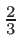
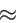

Wstecz: 13. C-struktury i unie W górę: 13. C-struktury i unie Dalej: 13.2 Unie
Struktura definiuje nowy typ danych. Jest to typ złożony: pojedyncza zmienna typu strukturalnego może zawierać wiele danych (liczb, napisów, wskaźników, itd.). W odróżnieniu od tablic, dane te nie muszą być tego samego typu (jak elementy tablicy).
Definicja C-struktury może mieć następującą postać:
struct Nazwa {
Typ1 sklad1;
Typ2 sklad2;
...
};
Nazwy
Typ1
i
Typ2
są tu nazwami typów (innych
niż nazwa typu strukturalnego który właśnie jest definiowany,
czyli tutaj
Nazwa). Nazwy
sklad1
i
sklad2
dowolnymi indentyfikatorami
pól tej struktury. Każda zmienna
tego typu strukturalnego będzie zawierać składowe
o typach i nazwach odpowiadających
polom struktury. Na razie jednak jest to tylko definicja typu:
nie istnieją jeszcze żadne tego typu zmienne.
Średnik na końcu, po nawiasie zamykającym, jest konieczny!
W C++ po takiej samej definicji nazwą typu jest po prostu Nazwa. Natomiast w C nazwą tego typu jest struct Nazwa — konieczne jest zatem powtórzenie słowa kluczowego struct przy późniejszym użyciu nazwy tego typu. Można tego uniknąć stosując standardową „sztuczkę” ze specyfikatorem typedef:
typedef struct Nazwa {
// definicja struktury
} Nazwa;
W ten sposób nazwa
Nazwa
staje się (już jednowyrazowym)
aliasem pełnej nazwy
struct Nazwa.
Kiedy już zdefiniowaliśmy typ, możemy definiować zmienne tego typu; składnia jest dokładnie taka sama jak składnia deklaracji/definicji zmiennych typów wbudowanych (jak double czy int):
struct Nazwa a, b; /* C i C++ */
Nazwa c, d; // tylko C++
Można też definiować zmienne tego typu bezpośrednio
za definicją, a przed średnikiem:
struct Nazwa {
Typ1 skladowa1;
Typ2 skladowa2;
} a, b, c, d;
definiuje typ strukturalny i od razu definiuje cztery zmienne tego
typu. Ten ostatni zapis daje możliwość tworzenia obiektów struktur
anonimowych:
struct {
Typ1 skladowa1;
Typ2 skladowa2;
} a, b;
Za pomocą takiej konstrukcji stworzyliśmy dwa obiekty strukturalne
o nazwach
a i
b.
Każdy z nich zawiera dwie składowe odpowiadające dwóm polom w
definicji struktury. Do składowych tych można się
odnosić w sposób opisany poniżej, jak do składowych zwykłych
struktur posiadających nazwę. Nie da się już jednak
zdefiniować innych obiektów tego samego typu, bo typ ten nie ma
żadnej nazwy i nie ma jak się do niego odwołać!
Każdy pojedynczy obiekt typu zdefiniowanego jako C-struktura zawiera tyle składowych i takich typów, jak to zostało określone w definicji tej C-struktury. Jeśli zdefiniowany (utworzony) jest obiekt, to do jego składowych odnosimy się za pomocą operatora wyboru składowej. Operator ten ma dwie formy (patrz pozycje 4 i 5 w tabeli operatorów), w zależności od tego, czy odnosimy się do obiektu poprzez jego nazwę, czy poprzez nazwę wskaźnika do niego. Jeśli a jest nazwą obiektu, to do jego składowej o nazwie sklad odnosimy się za pomocą operatora „kropki”:
a.skladTa sama reguła stosowałaby się, gdyby a było nazwą referencji do obiektu — pamiętajmy jednak, że w czystym C odnośników (referencji) nie ma. Natomiast jeśli pa jest wskaźnikiem do pewnego obiektu struktury, to do tej samej składowej odnosimy się za pomocą operatora „strzałki”:
pa->sklad(„strzałka” to dwuznak złożony z myślnika i znaku większości; odstęp między tymi dwoma znakami jest niedopuszczalny).
Ta sama zasada dotyczy nie tylko struktur, które mają postać C-struktur, ale wszystkich struktur i klas w C++.
Zauważmy, że forma pa->sklad jest w zasadzie notacyjnym skrótem zapisu (*pa).sklad, gdyż *pa jest właśnie l-wartością obiektu wskazywanego przez pa. Zatem jeśli a jest identyfikatorem obiektu struktury posiadającej pole x typu double, a pa wskaźnikiem do tego obiektu, to następujące instrukcje są równoważne:
1. a.x = 3.14;
2. (&a)->x = 3.14;
3. pa->x = 3.14;
4. (*pa).x = 3.14;
W linii 2 i 4 nawiasy są potrzebne, gdyż operatory
wyboru składowej (kropka i „strzałka”) mają wyższy priorytet
niż operatory dereferencji i wyłuskania adresu ('
*' i
'
&').
Zapamiętajmy zatem:
Tworząc obiekt typu C-struktury można go od razu zainicjować. Składnia jest podobna do tej, jakiej używamy do inicjowania tablicy:
Nazwa ob = {wyr_1, wyr_2};
gdzie
wyr_1
i
wyr_2
są wyrażeniami, których
wartości mają posłużyć do zainicjowania składowych obiektu w
kolejności takiej, w jakiej zadeklarowane zostały odpowiednie pola
struktury. Inicjatorów może być mniej niż pól; składowe
odpowiadające pozostałym polom zostaną wtedy zainicjowane
zerami odpowiedniego typu. Słowo kluczowe
struct
w powyższej
instrukcji może być pominięte w C++, natomiast jest niezbędne w C.
W poniższym przykładzie definiujemy strukturę
Sam
(➊) opisującą, w bardzo uproszczony sposób, samochody.
Ma ona dwa pola:
predk
i
roczn
typu, odpowiednio,
double
i
int. Dwie zmienne typu
Sam
od razu definiujemy: zmienną
skoda
i zmienną
fiat.
Tę drugą również inicjujemy podając w nawiasach klamrowych
wartości inicjatorów w kolejności odpowiadającej kolejności
pól w definicji struktury
Sam. Zmienna
skoda
jest utworzona, ale nie została zainicjowana, więc wartości jej
składowych są na razie nieokreślone. Obie zmienne są globalne.
1. #include <iostream>
2. using namespace std;
3.
4. struct Sam { ➊
5. double predk;
6. int roczn;
7. } skoda, fiat{100, 1998};
8.
9. void pr(const char*,const Sam*);
10.
11. int main() {
12. Sam toyota, *mojsam = &toyota, *vw; ➋
13.
14. cout << "Obiekty \'Sam\' maja rozmiar " ➌
15. << sizeof(Sam) << " bajtow\n";
16. skoda.predk = 120; ➍
17. skoda.roczn = 1995;
18.
19. toyota.roczn = 2012; ➎
20. mojsam->predk = 180;
21.
22. vw = new Sam{175,2003}; ➏
23.
24. pr("Skoda ",&skoda);
25. pr("Fiat ",&fiat);
26. pr("Toyota",&toyota);
27. pr("mojsam", mojsam);
28. pr("VW ", vw);
29.
30. delete vw;
31. }
32.
33. void pr(const char *nazwa, const Sam *sam) {
34. cout << nazwa << ": predkosc " << sam->predk
35. << ", rocznik " << sam->roczn << endl;
36. }
Wewnątrz funkcji main definiujemy jeszcze jeden obiekt typu Sam o nazwie toyota. Prócz tego definiujemy dwie zmienne wskaźnikowe: mojsam zainicjowaną adresem obiektu toyota oraz vw, która na razie nie jest zainicjowana (linia ➋).
W linii ➌ drukujemy rozmiar obiektów typu Sam. Może to być 12 bajtów: 8 bajtów na składową predk typu double i 4 bajty na składową roczn typu int. Na wielu platformach preferowane są rozmiary będące wielokrotnością 8 bajtów; wtedy każdy obiekt będzie zawierał dodatkowe, nieużywane bajty, tzw. padding (wypełnienie). Na komputerze autora ten właśnie przypadek ma miejsce, o czym przekonuje nas wydruk:
Obiekty 'Sam' maja rozmiar 16 bajtow
Skoda : predkosc 120, rocznik 1995
Fiat : predkosc 100, rocznik 1998
Toyota: predkosc 180, rocznik 2012
mojsam: predkosc 180, rocznik 2012
VW : predkosc 175, rocznik 2003
W liniach ➍ i następnej wpisujemy wartości do składowych obiektu
skoda. Ponieważ
skoda
jest identyfikatorem
obiektu, a nie wskaźnika, używamy operatora „kropki”.
W liniach ➎ i następnej wpisujemy wartości do składowych obiektu toyota. W linii ➎ odnosimy się do tego obiektu poprzez jego nazwę, więc używamy notacji z kropką; w linii następnej do tego samego obiektu (patrz linia ➋) odnosimy się poprzez wskaźnik mojsam, zatem używamy notacji ze „strzałką”.
W linii ➏ alokujemy na stercie (poprzez new) nowy obiekt typu Sam i zwrócony adres wpisujemy do wskaźnika vw. Obiekt jest od razu inicjowany poprzez użycie składni z listą inicjatorów w nawiasach klamrowych; jest to dozwolone w nowym standardzie C++11 (zauważmy jednak, że użycie tu znaku równości przed otwierającą klamrą byłoby błędem).
Następnie drukujemy informacje o naszych zmiennych za pomocą funkcji pr. Funkcja ta ma drugi parametr typu wskaźnikowego const Sam*, a więc trzeba do niej wysłać adres obiektu; dlatego jako argument wpisujemy albo zmienną wskaźnikową (bo jej wartością jest właśnie adres), albo, jeśli używamy nazwy obiektu, wyłuskujemy jego adres za pomocą operatora ' &'.
C-struktury są bardzo często używane w funkcjach bibliotecznych. Na przykład, włączając plik nagłówkowy sys/timeb.h mamy do dyspozycji funkcję ftime (funkcje udostępniane przez nagłówek sys/timeb.h nie należą do standardu, ale są zaimplementowane w Linuksie, w wersji C++ firmy Microsoft i w większości innych implementacji tego języka). Funkcja ftime wymaga argumentu w postaci adresu obiektu struktury timeb zdefiniowanej następująco (ta definicja jest już widoczna po włączeniu pliku nagłówkowego sys/timeb.h):
struct timeb {
time_t time;
unsigned short millitm;
short timezone;
short dstflag;
};
Korzystając z funkcji systemowych, funkcja wypełnia ten obiekt danymi.
Składowa
time
będzie liczbą sekund od początku
epoki,
czyli od 1 stycznia 1970 roku, do chwili obecnej.
Jej typ,
time_t, odpowiada pewnemu typowi
całkowitemu ze znakiem. Zwykle jest to
long, a więc
maksymalna wartość tej składowej dla maszyn 32-bitowych, na których
sizeof(long) jest 4, wynosi
231 -1 = 2147483647  2.1⋅109 i zostanie
osiągnięta w roku 2038 (jeden rok to w przybliżeniu
107π sekund). Składowa
millitm
to liczba
milisekund od początku ostatniej pełnej sekundy. Składowe
timezone
i
dstflag
nie są używane.
Za pomocą funkcji
ftime
możemy, choć nie jest to najlepsza
metoda, mierzyć czas wykonania pewnych fragmentów programu:
1. #include <iostream>
2. #include <cmath> // sin, cos
3. #include <sys/timeb.h> // ftime
4. using namespace std;
5.
6. int main() {
7. timeb start, teraz; ➊
8. double res = 0;
9.
10. ftime(&start); ➋
11.
12. for (int i = 0; i <= 90000000; ++i) {
13. if (i%10000000 == 0) {
14. ftime(&teraz); ➌
15. time_t sec = teraz.time - start.time;
16. int msec = teraz.millitm;
17. msec -= start.millitm;
18. if (msec < 0) {
19. --sec;
20. msec += 1000;
21. }
22. cout << "Po " << i << " iteracjach: "
23. << sec << "s and " << msec << "ms\n";
24. }
25. res = cos(res+sin(i));
26. }
27. cout << "Bezuzyteczny wynik: " << res << endl;
28. }
W linii ➊ tworzymy dwie zmienne typu timeb: zmienną start i teraz. W linii ➋ pierwszą z nich wypełniamy aktualnymi danymi wywołując funkcję ftime, a następnie z drugą z nich robimy to samo w pętli (➌), co 10 milionów obrotów, za każdym razem obliczając czas, jaki upłynął do tego momentu od chwili uruchomienia programu:
Po 0 iteracjach: 0s and 0ms
Po 10000000 iteracjach: 0s and 886ms
Po 20000000 iteracjach: 1s and 769ms
Po 30000000 iteracjach: 2s and 663ms
Po 40000000 iteracjach: 3s and 555ms
Po 50000000 iteracjach: 4s and 438ms
Po 60000000 iteracjach: 5s and 321ms
Po 70000000 iteracjach: 6s and 205ms
Po 80000000 iteracjach: 7s and 90ms
Po 90000000 iteracjach: 7s and 974ms
Bezuzyteczny wynik: 0.953078
Zmienna
res
jest tu obliczana tylko po to, aby dać
programowi coś do roboty...
Nic nie stoi na przeszkodzie, aby składowymi struktury były obiekty innej struktury. Oczywiście, składowymi struktury nie mogą być obiekty tej samej struktury, bo one też musiałyby zawierać obiekty tej struktury, które z kolei też musiałyby zawierać ... i tak ad infinitum...
Wyobraźmy sobie, że chcemy opisywać punkty na płaszczyźnie. Naturalną reprezentacją takich obiektów byłaby struktura o dwóch polach odpowiadających współrzędnym kartezjańskim punktu
struct Punkt {
double x, y;
};
Gdybyśmy teraz potrzebowali trójkąta, moglibyśmy zdefiniować
go jako strukturę złożoną z trzech punktów odpowiadających
jego wierzchołkom
struct Trojkat {
Punkt A, B, C;
};
Ponieważ w C-strukturach nie ma metod i konstruktorów, operacje
na tych obiektach musielibyśmy zdefiniować za pomocą globalnych
funkcji. Na przykład w poniższym programie definiujemy funkcję
realizującą obrót punktu na płaszczyźnie kartezjańskiej
wokół początku układu współrzędnych. Taki obrót o kąt
φ opisany jest wzorami na współrzędne punktu po obrocie
(zmienne primowane) w funkcji współrzędnych przed obrotem (zmienne
nieprimowane):

Odpowiada temu funkcja rot zadeklarowana w linii ➌ poniższego programu: 1. #include <iostream>
2. #include <cmath> // sin, cos
3. using namespace std;
4.
5. struct Punkt {
6. double x, y;
7. };
8.
9. struct Trojkat {
10. Punkt A, B, C;
11. };
12.
13. void info(const Punkt*); ➊
14. void info(const Trojkat*); ➋
15. void rot(Punkt*,double); ➌
16. void rot(Trojkat*,double); ➍
17.
18. int main() {
19. Punkt A;
20. A.x = -1;
21. A.y = 2;
22.
23. Punkt B = { -1, 1 };
24.
25. Punkt C = { 2 };
26. C.y = -1;
27.
28. Trojkat T = { A, B };
29. T.C = C;
30.
31. cout << "Wyjsciowe punty: ";
32. info(&A); info(&B); info(&C);
33. cout << "\nTrojkat: ";
34. info(&T);
35. cout << endl;
36.
37. rot(&A,90); rot(&B,90); rot(&C,90); ➎
38. cout << "A, B, C po obrocie o 90 stopni:\n ";
39. info(&A); info(&B); info(&C);
40. cout << endl;
41.
42. rot(&T,90); rot(&T,90); ➏
43. cout << "T po obrocie dwa razy o 90 stopni:\n ";
44. info(&T);
45.
46. rot(&T,180); ➐
47. cout << "T po obrocie o nastepne 180 stopni:\n ";
48. info(&T);
49. }
50.
51. void info(const Punkt* pP) {
52. cout << "(" << pP->x << ", " << pP->y << ") ";
53. }
54.
55. void info(const Trojkat* pT) {
56. cout << "A="; info(&pT->A); ➑
57. cout << "B="; info(&pT->B);
58. cout << "C="; info(&pT->C);
59. cout << endl;
60. }
61.
62. void rot(Punkt* pP, double phi) {
63. static double conver = atan(1.)/45;
64. phi = phi*conver; // stopnie -> radiany
65.
66. double c = pP->x;
67. pP->x = pP->x * cos(phi) - pP->y * sin(phi);
68. pP->y = c * sin(phi) + pP->y * cos(phi);
69. }
70.
71. void rot(Trojkat* pT, double phi) {
72. rot( &pT->A, phi); ➒
73. rot( &pT->B, phi);
74. rot( &pT->C, phi);
75. }
Funkcja ta pobiera adres punktu, dzięki czemu może pracować na oryginale poprzez wskaźnik (dlatego w jej definicji używamy „strzałek” a nie kropek). Jako przykład wybierzmy punkty A = (- 1, 2), B = (- 1, 1), C = (2, - 1), jak po lewej stronie rysunku:

Następnie definiujemy trójkąt o wierzchołkach w punktach opisanych zmiennymi A, B i C. Zauważmy, że przypisanie wartości tych obiektów składowym obiektu T powoduje kopiowanie tych wartości. Po zainicjowaniu obiekt T jest niezależny od obiektów A, B i C. Drukując informację o punktach i trójkącier widzimy, że odpowiada ona sytuacji po lewej stronie rysunku.
Następnie, w linii ➎, dla każdego z punktów wywołujemy funkcję rot, która oblicza ich nowe współrzędne po obrocie o 90o; ponieważ funkcja pracuje na oryginale, stare współrzędne są zamazywane. Punkty zatem uległy zmianie — ich współrzędne odpowiadają teraz sytuacji ze środkowej części rysunku. Zauważmy, że sam trójkąt T nie zmienił się; jego składowe są bowiem kopiami oryginalnych punktów sprzed zmiany.
Wyjsciowe punty: (-1, 2) (-1, 1) (2, -1)
Trojkat: A=(-1, 2) B=(-1, 1) C=(2, -1)
A, B, C po obrocie o 90 stopni:
(-2, -1) (-1, -1) (1, 2)
T po obrocie dwa razy o 90 stopni:
A=(1, -2) B=(1, -1) C=(-2, 1)
T po obrocie o nastepne 180 stopni:
A=(-1, 2) B=(-1, 1) C=(2, -1)
W linii ➏ obracamy z kolei trójkąt. Zauważmy, że funkcja do
obracania trójkątów też nazywa się
rot, dokładnie tak jak funkcja
do obracania punktów (➌ i ➍); ma jednak parametry
innego typu, więc „nie myli się” kompilatorowi z funkcją
rot
dla punktów (podobne przeciążenie zastosowaliśmy dla dwóch
funkcji
info: dla punktów ➊ i dla trójkątów ➋).
Funkcja
rot
dla trójkątów
jest bardzo prosta i nie wymaga żadnej wiedzy z trygonometrii:
po prostu wywołuje funkcję
rot
dla punktów posyłając
do niej adresy punktów, które są składowymi obiektu typu
Trojkat, dla którego sama została wywołana. Użyta w liniach
➑ i ➒ konstrukcja
&pT->A jest prawidłowa i oznacza adres obiektu
A
(punktu) będącego składową obiektu typu
Trojkat
wskazywanego przez
wskaźnik
pT
— czytelniejszy może byłby tu zapis
&(pT->A), który oznacza to samo, bo priorytet operatora wyboru
składowej przez wskaźnik ('
->') jest wyższy od priorytetu
wyłuskania adresu ('
&').
Po dwukrotnym obrocie o kąt 90o, czyli w sumie o kąt 180o, trójkąt powinien być (i jest, jak widać z wydruku) ulokowany jak w prawej części rysunku. Po kolejnym obrocie o 180o (➐) trójkąt wraca do pozycji wyjściowej przedstawionej po lewej stronie rysunku i w ostatniej linii wydruku.
Jak wspomnieliśmy, składową struktury lub klasy nie może z oczywistych względów być obiekt tejże klasy. Nic jednak nie stoi na przeszkodzie, aby taką składową był wskaźnik do obiektu tej struktury/klasy. Jest to przypadek bardzo często spotykany i użyteczny, ponieważ umożliwia tworzenie list obiektów. W każdym obiekcie struktury zawarta jest wtedy składowa będąca adresem następnego obiektu na liście. Mówimy wtedy o liście jednokierunkowej — stosuje się też listy dwukierunkowe, w których każdy obiekt „pamięta” adres zarówno swego następnika, jak i poprzednika.
Zobaczmy, jak można taką prostą listę utworzyć. Konstruujemy
strukturę
Wezel
zawierającą pewną liczbę pól z
jakąś informacją; w przykładzie poniżej są to dwie liczby typu
double
— polom tym nadajemy nazwy
szer
i
wyso. Prócz tego definiujemy dodatkowe pole
next
typu
Wezel*. Składowe obiektów odpowiadające temu polu będą
właśnie zawierać adresy obiektów następnych na liście. Umawiamy
się, że element ostatni, który już następnika nie ma, ma w tej
składowej wskaźnik pusty
nullptr
(odpowiadający
NULL).
Inna często spotykana konwencja polega na tym, że element ostatni zawiera
wskaźnik wskazujący na samego siebie lub na element pierwszy — w tym
ostatnim przypadku otrzymujemy listę cykliczną.
1. #include <iostream>
2. using namespace std;
3.
4. struct Wezel {
5. double szer;
6. double wyso;
7. Wezel *next;
8. };
9.
10. void wstaw_dane(Wezel* n, double s, double w, Wezel* next);
11. void drukuj_liste(const Wezel* n);
12. void drukuj_liste_odwrotnie(const Wezel* n);
13.
14. int main() {
15. Wezel A = {4, 44, nullptr}; ➊
16. Wezel B, D, *head;
17.
18. Wezel* pC = new Wezel; ➋
19.
20. wstaw_dane(&B,3,33,&A);
21. wstaw_dane(pC,2,22,&B);
22. wstaw_dane(&D,1,11,pC);
23.
24. head = &D; ➌
25.
26. drukuj_liste(head);
27. drukuj_liste_odwrotnie(head);
28.
29. delete pC;
30. }
31.
32. void wstaw_dane(Wezel* n, double s, double w, Wezel* next) {
33. n->szer = s;
34. n->wyso = w;
35. n->next = next;
36. }
37.
38. void drukuj_liste(const Wezel* n) {
39. for ( ; n; n = n->next )
40. cout << n->szer << " " << n->wyso << "; ";
41. cout << endl;
42. }
43.
44. void drukuj_liste_odwrotnie(const Wezel* n) {
45. if (n == nullptr) return; // pusta lista
46. if (n->next != nullptr) ➍
47. drukuj_liste_odwrotnie(n->next);
48. cout << n->szer << " " << n->wyso << "; ";
49. }
W linii ➊ tworzymy obiekt A typu Wezel i od razu inicjujemy jego trzy składowe; taka składnia inicjowania dozwolona jest jak wiemy dla C-struktur, choć nie dla bardziej skomplikowanych struktur dopuszczanych przez C++. W linii następnej definiujemy dwa obiekty struktury — B i D — oraz wskaźnik do obiektów tej struktury head. W linii ➋ alokujemy na stercie jeszcze jeden obiekt; adres zwrócony przez new przypisujemy do pC. Następnie wypełniamy utworzone obiekty danymi za pomocą funkcji wstaw_dane. Pobiera ona adres obiektu do wypełnienia, dwie liczby typu double jako dane oraz adres innego obiektu, który ma być wartością składowej next i wskazywać na obiekt następny na liście. Zauważmy, że aby pobrać adres, stosujemy operator wyłuskania adresu ' &' dla A, B i D, ale nie dla obiektu wskazywanego przez pC: pC jest zmienną wskaźnikową i już zawiera właśnie adres obiektu; sam obiekt wskazywany jest na stercie i w ogóle nie ma nazwy. Widzimy, że B zawiera adres A jako następującego po nim; dla obiektu wskazywanego przez pC następnym jest B, a dla D następnym jest *pC, czyli obiekt wskazywany przez pC. Sytuacja ta przedstawiona jest na rysunku:

W linii ➌ zapamiętujemy w zmiennej head adres głowy listy. Zauważmy, że aby operować na liście, wystarczy nam ten adres: mając dostęp do pierwszego elementu, możemy w jego składowej next znaleźć adres następnego itd.
Jako przykład w programie zdefiniowane są dwie funkcje: drukuj_liste i drukuj_liste_odwrotnie. Obie pobierają wyłącznie adres głowy listy. Pierwsza z nich przebiega po liście w pętli for drukując wartości danych; za każdym obrotem pętli wartość wskaźnika do obiektu z listy n zamieniana jest na ' n->next', aż wartością n stanie się nullptr, co nastąpi po dotarciu do elementu A.
Ciekawsza jest druga funkcja, drukuj_liste_odwrotnie. Jej zadaniem jest wydrukować informacje o elementach listy w odwrotnej kolejności: od ogona do głowy. Nie da się tego zrobić tak jak w poprzednim przypadku, bo nie możemy przechodzić listy do tyłu: elementy „nie znają” swych poprzedników. Rozwiązaniem jest rekurencja: z funkcji main wywołujemy drukuj_liste_odwrotnie dla głowy, czyli obiektu D. Funkcja jednak nie wypisuje informacji od razu, bo w linii ➍ następuje wywołanie dla następnika, a następnie dla jego następnika itd.; w końcu dla A (ogon listy) warunek z linii ➍ jest nieprawdziwy, zatem funkcja wypisuje informację i wraca do wywołania dla B, wypisuje informacje o B i wraca do wywołania dla *pC itd. Widzimy, że wędrówkę do tyłu zapewnia nam zwijanie stosu podczas powrotów z wywołań funkcji:
1 11; 2 22; 3 33; 4 44;
4 44; 3 33; 2 22; 1 11;
Obiekt typu C-struktury może pełnić rolę zarówno argumentu funkcji, jak i wartości zwracanej przez funkcję. Trzeba jednak pamiętać, że przesyłanie obiektów do i z funkcji może być bardzo nieefektywne, jeśli obiekty są duże. W takich przypadkach należy raczej przesyłać wskaźniki (lub referencje) i starać się nie przenosić i nie kopiować samych obiektów. To samo dotyczy oparacji na tablicach obiektów: często lepiej jest operować raczej na tablicach wskaźników do obiektów.
Na przykład w poniższym programie obiekty struktury
Krol
zajmują co najmniej 44 bajty (40 na
imie
i 4 na
ur), a wskaźniki do nich tylko 4 (lub 8):
1. #include <iostream>
2. #include <iomanip> /* setw */
3. using namespace std;
4.
5. struct Krol{
6. int ur;
7. char imie[40];
8. };
9.
10. void insertionSort(Krol*[],int);
11.
12. int main() {
13. Krol zygmunt = {1467, "Zygmunt Stary"},
14. michal = {1640, "Michal Korybut Wisniowiecki"},
15. wladyslaw = {1351, "Wladyslaw Jagiello"},
16. anna = {1523, "Anna Jagiellonka"},
17. jan = {1459, "Jan Olbracht"};
18.
19. Krol* krolowie[] = { &zygmunt, &michal, &wladyslaw, ➊
20. &anna, &jan};
21.
22. const int ile = sizeof(krolowie)/sizeof(Krol*);
23.
24. cout << "sizeof(Krol ) = " << sizeof(Krol ) << endl;
25. cout << "sizeof(Krol*) = " << sizeof(Krol*) << endl
26. << endl;
27. insertionSort(krolowie, ile);
28.
29. for ( int i =0; i < ile; i++ ) ➋
30. cout << setw(28) << krolowie[i]->imie
31. << setw(5) << krolowie[i]->ur << endl;
32. }
33.
34. void insertionSort(Krol* a[], int wymiar) {
35. if ( wymiar <= 1 ) return;
36.
37. for ( int i = 1 ; i < wymiar ; ++i ) {
38. int j = i;
39. Krol* v = a[i];
40. while ( j >= 1 && v->ur < a[j-1]->ur ) { ➌
41. a[j] = a[j-1]; ➍
42. j--;
43. }
44. a[j] = v;
45. }
46. }
Zatem, jeśli chcemy posortować królów według dat ich urodzenia, lepiej posortować tablicę wskaźników do obiektów ich reprezentujących, niż same te obiekty. Sortowanie bowiem łączy się z kopiowaniem i przenoszeniem elementów; lepiej jest więc kopiować wskaźniki niż czterdziestocztero-bajtowe obiekty. W linii ➊ budujemy zatem tablicę wskaźników i przesyłamy ją do funkcji sortującej. W funkcji sortującej, w linii ➌, widzimy, że kryterium sortowania jest wartość składowej ur obiektu wskazywanego przez wskaźnik będący elementem tablicy. Natomiast przestawiamy i kopiujemy tylko wskaźniki (jak w linii ➍), a nie wskazywane przez nie obiekty. Mimo to cel został osiągnięty: możemy wypisać imiona królów posortowane według roku urodzenia (➋):
sizeof(Krol ) = 44
sizeof(Krol*) = 8
Wladyslaw Jagiello 1351
Jan Olbracht 1459
Zygmunt Stary 1467
Anna Jagiellonka 1523
Michal Korybut Wisniowiecki 1640
Użyty tu manipulator
setw
służy jedynie ładniejszemu
sformatowaniu wydruku. Funkcja sortująca jest implementacją
algorytmu sortowania przez wstawianie
„bez wartownika”.
Można, a czasem trzeba, zadeklarować strukturę (unię, klasę) bez jej definiowania. Nie jest wtedy znany rozmiar obiektów tej struktury, więc jest to typ niekompletny. Taka deklaracja nazywa się zapowiadającą. Dzięki niej możemy korzystać z nazwy tego typu wszędzie tam, gdzie nie jest wymagany rozmiar obiektu, a więc np. do definiowania wskaźników do obiektów tego typu. Oczywiście, tylko definiowania, ale nie np. inicjowania, bo żeby taki wskaźnik zainicjować, musiałby istnieć obiekt, a ten możemy utworzyć dopiero po pełnym zdefiniowaniu struktury, kiedy będzie znany rozmiar jej obiektów.
Sytuacja, kiedy taka deklaracja zapowiadająca jest konieczna zachodzi, gdy jedna struktura zawiera, jako pola, wskaźniki do drugiej struktury, a ta druga – wskaźniki do tej pierwszej. Tak więc fragment
1. struct AA {
2. BB *b; // NIE
3. // ...
4. };
5.
6. struct BB {
7. AA *a;
8. // ...
9. }
jest błędny, gdyż w linii drugiej nie wiadomo, co to takiego
BB. Zmiana kolejności definicji struktur
AA
i
BB
nie pomoże, bo wtedy w definicji struktury
BB
nie wiadomo będzie, co to jest
AA. Rozwiązaniem jest
deklaracja struktury: należy przed definicją struktury
AA
zapowiedzieć, że
BB
jest strukturą, której
definicja
będzie podana później. Od tej chwili można już definiować
wskaźniki do obiektów typu
BB, choć nie można
jeszcze definiować samych obiektów. Deklaracja zapowiadająca ma
postać
struct Nazwa;gdzie Nazwa jest nazwą zapowiadanej, ale na razie nie definiowanej, struktury. To samo dotyczy innych typów złożonych, tzn. klas i unii. Tak więc w naszym przykładzie powinniśmy byli napisać
1. struct BB;
2.
3. struct AA {
4. BB *b;
5. // ...
6. };
7.
8. struct BB {
9. AA *a;
10. // ...
11. }
i teraz w definicji struktury
AA
wiadomo, że
BB
jest nazwą typu, który będzie zdefiniowany później. Definicja
BB
nie jest jednak potrzebna, aby określić rozmiar przyszłych
obiektów klasy
AA, bo zawierać one będą tylko wskaźniki
do obiektów
BB, a rozmiar wskaźników jest kompilatorowi
znany.
Jako przykład rozpatrzmy program:
1. #include <iostream>
2. #include <cstring> // strcpy
3. using namespace std;
4.
5. struct Husband;
6. struct Wife;
7.
8. void prinfo(const Husband*);
9. void prinfo(const Wife*);
10.
11. struct Wife {
12. Husband *hus;
13. char name[20];
14. } honoratka = { 0, "Honoratka" } ;
15.
16. struct Husband {
17. Wife *wif;
18. char name[20];
19. } antoni = { 0 } ;
20.
21. int main() {
22. strcpy(antoni.name, "Antoni"); ➊
23.
24. antoni.wif = &honoratka;
25. honoratka.hus = &antoni;
26.
27. Husband zenobiusz = { 0, "Zenobiusz" };
28. Wife celestynka = { 0, "Celestynka"};
29.
30. prinfo(&antoni);
31. prinfo(&honoratka);
32. prinfo(&zenobiusz);
33. prinfo(&celestynka);
34. }
35.
36. void prinfo(const Husband *h) {
37. cout << "Mezczyzna: " << h->name;
38. if ( h->wif )
39. cout << "; zona "
40. << h->wif->name << "\n"; ➋
41. else
42. cout << "; (kawaler)\n";
43. }
44.
45. void prinfo(const Wife *w) {
46. cout << "Kobieta: " << w->name;
47. if ( w->hus )
48. cout << "; maz "
49. << (*((*w).hus)).name << "\n"; ➌
50. else
51. cout << "; (panna)\n";
52. }
Na początku deklarujemy dwie struktury: Husband i Wife. Dzięki temu możemy zadeklarować funkcje prinfo których typem parametru są wskaźniki do obiektów Husband i Wife (nie możemy na razie zdefiniować tych funkcji, bo w jej treści używać będziemy nazw pól tych struktur, a te nie są na razie znane). Zauważmy, że deklarujemy dwie funkcje o tej samej nazwie. Różnią się one jednak wystarczająco typem parametru, więc takie przeciążenie jest legalne.
Dalej definiujemy struktury Husband i Wife, przy czym mamy tu właśnie do czynienia z przypadkiem, gdy jedna struktura zawiera, jako pole, wskaźnik do drugiej struktury, a ta druga – wskaźnik do tej pierwszej. Zatem deklaracja zapowiadająca była tu niezbędna. Zauważmy też, że nawet po tej deklaracji niemożliwe byłoby, aby struktura Wife zawierała jako pole obiekt (a nie wskaźnik) typu Husband, a struktura Husband obiekt typu Wife. Oznaczałoby to bowiem, że obiekt typu Wife zawierałby obiekt typu Husband, który z kolei zawierałby obiekt typu Wife, który z kolei ...i tak ad infinitum. Funkcja strcpy z linii ➊ służy do kopiowania C-napisów i poznamy ją dokładniej w rozdziale o napisach . Dalszy ciąg programu jest już zrozumiały; jego rezultat:
Mezczyzna: Antoni; zona Honoratka
Kobieta: Honoratka; maz Antoni
Mezczyzna: Zenobiusz; (kawaler)
Kobieta: Celestynka; (panna)
Zwróćmy jeszcze uwagę na linie ➋ i ➌.
W linii ➋ wyrażenie
h->wif->nameoznacza wartość składowej name obiektu wskazywanego przez wskaźnik będący składową wif obiektu wskazywanego przez wskaźnik h. W ten sposób mając wskaźnik do męża wyłuskujemy imię jego żony. Linia ➌ zawiera analogiczne wyrażenie
(*((*w).hus)).nameza pomocą którego mając wskaźnik do żony (zmienna w) wyłuskujemy imię jej męża. Zauważmy, jak notacja ze „strzałką” upraszcza tego typu konstrukcje – w powyższym wyrażeniu wszystkie nawiasy są niezbędne!
T.R. Werner, 28 września 2018; 23:31